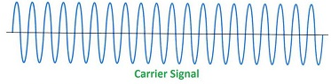
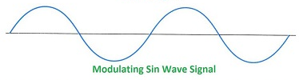
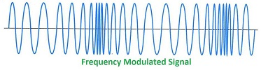
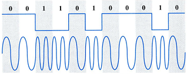
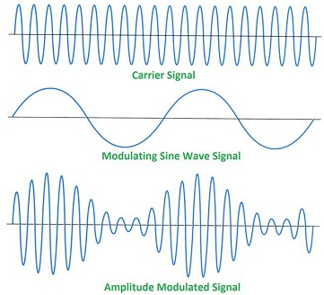
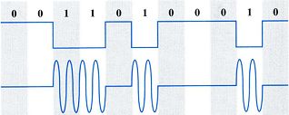
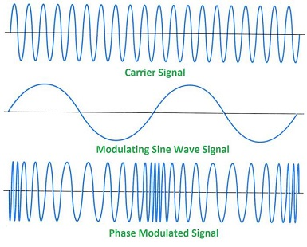
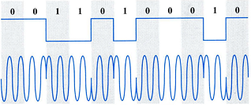

Signals basics
(Signals images from: ironbark.xtelco.com.au)
Signals are electromagnetic waves measured in Hz (cycles per second)

To transmit useful information we need to “modulate” a carrier signal with the information

Frequency Modulation changes the frequency of the carrier proportionally to the information you wish to transmit

Modulation schemes
Frequency modulation
An example of a varying input signal modulating a carrier wave by proportionally changing it's frequency is shown above. If digital information needs to be modulated then FSK is used:
FSK

Amplitude modulation
Another modulation scheme is Amplitude Modulation, where the amplitude (or volume) of the carrier is modified proportionally to the signal. One disadvantage of AM is that the receiver amplifies and detects noise and electromagnetic interference in equal proportion to the signal, which is why AM radio signals are not as clear as FM radio signals.
AM

The digital equivalent of AM is ASK
ASK

Phase modulation
The third major modulation scheme is Phase Modulation where the phase of the carrier is modified proportionally by the input signal. PM looks very similar to FM, but it's much clearer what is going on when you look at the PSK signal below.
PM

The digital equivalent of PM is PSK
PSK

More complex modulation schemes
In order to smooth the transitions in digital modulation there are "Gaussian" variants e.g. GFSK (Gaussian Frequency Shift Keying). This reduces the bandwidth of the signal channel by applying a Gaussian filter prior to modulation.
In previous examples there have only been two symbols (one representing a "0" and the other representing a "1"). To increase the data rate, multiple symbols are created at different amplitudes and phases e.g with 16QAM. Below is a phase diagram with the phase angle represented as the 360 degrees around the origin (centre of the diagram) and the amplitude represented as the vector distance from the origin. Each symbol can now represent four bits:

TODO: Add much more about modulation here